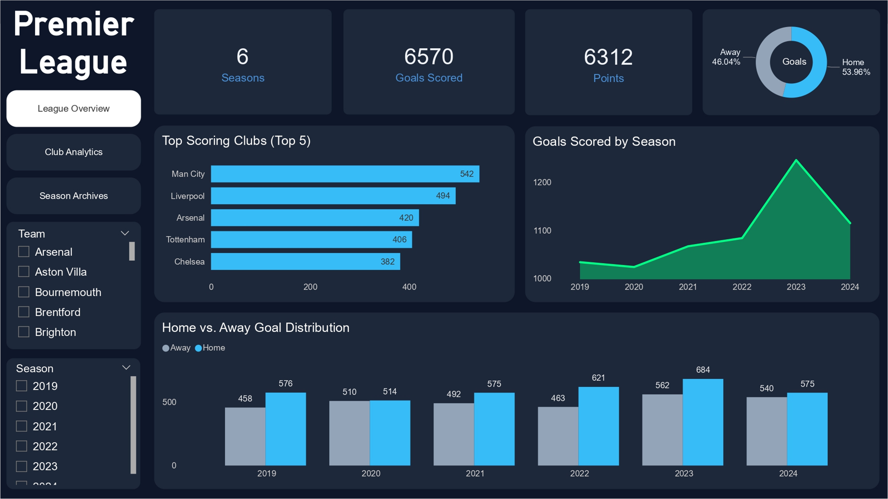
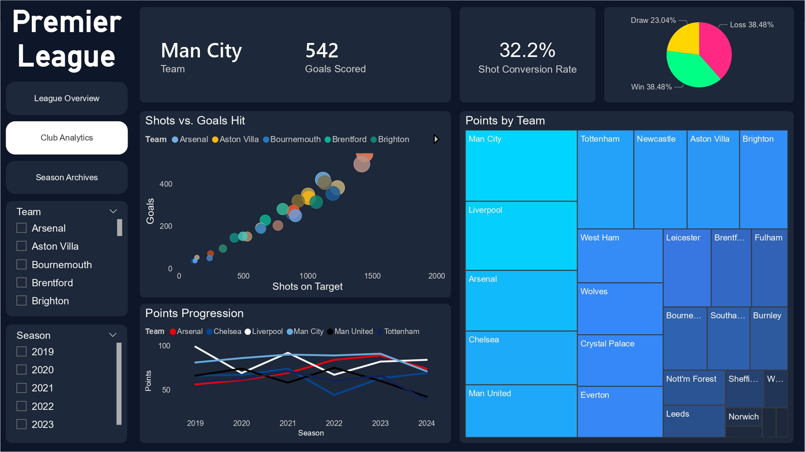
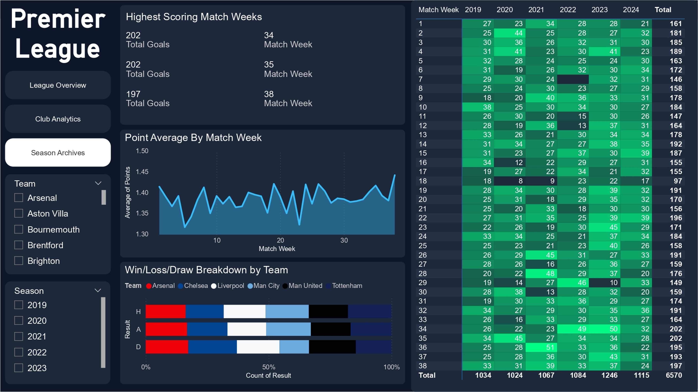

I'm a data analyst who turns messy data into answers people can act on. I use SQL, Python and Power BI to find what's driving the numbers, and I'm now moving into data engineering to build pipelines that keep that data reliable.
Open to Data Engineer, Analytics Engineer and Data Analyst roles.
>_ vansh.dbLoading SQLite…
A portfolio you can query. Pick a table below, or write some SQL.
Enter to run · ↑ ↓ history · read-only
My experience
May 2024 to June 2025
Hive.AI · Data Analyst
Audited 100,000+ training samples with SQL, about 2,500 a day for over two months, to remove incorrect entries before LLM training.
Built Python automation to filter and clean datasets, cutting manual effort by about 20%.
Built a Power BI dashboard for self-service tracking of task completion and team performance.
Analysed performance data in Excel, including root cause analysis of the results.
Led a four-member team through a three-day dataset cleanup.
July 2023 to August 2023
Reliance Retail · Marketing Intern
Analysed catchment areas to identify optimal store locations and customer reach.
Tracked in-store engagement metrics to inform marketing strategy.
Mapped competitor presence and foot traffic for a new store launch.
My projects



Premier League Dashboard
A multi-view Power BI report covering six seasons and 6,570+ goals. Built with DAX measures and Power Query, with views for league overview, club analytics and season archives, plus shot conversion rate, scatter and treemap visuals.
A fragrance price tracker across five Indian retailers. Python scrapers feed PostgreSQL, Airflow orchestrates the runs, and containerized dbt models turn raw prices into clean tables. A Flask app serves price comparisons and history.
A Bronze, Silver and Gold pipeline on Databricks over about seven weeks of UK e-commerce transactions. Silver fixes types, flags cancellations and removes duplicates. Gold tables cover daily revenue, top products and cancellation rate, served through a SQL dashboard and a daily scheduled job.
Analysed the IBM employee attrition dataset with PostgreSQL and Power BI. Found overtime to be the biggest driver, with roughly three times the attrition rate, and cross-validated the SQL and dashboard numbers in Python.